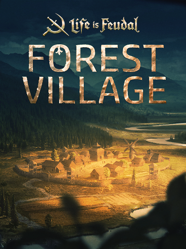

Life is Feudal: Forest Village
Life is Feudal: Forest Village
Details
|  | |
| Spielzeit | 1m 0s |
| Letzte Aktivität | 17.11.2020 15:07:00 |
| Hinzugefügt | 08.11.2020 23:27:51 |
| Modifiziert | 10.11.2022 12:41:43 |
| Fertigstellungsstatus | Gespielt |
| Bibliothek | Steam |
| Quelle | Steam |
| Plattform | PC (Windows) |
| Veröffentlichungsdatum | 26.05.2017 |
| Community Bewertungen | 64 |
| Kritiker Punkte | |
| Benutzerwertung | |
| Genre | Indie Simulation |
| Entwickler | Mindillusion |
| Verleger | Bitbox Ltd. |
| Eigenschaft | Cloud Saves Single Player Workshop |
| Links | Communityhub Diskussionen Guides Neuigkeiten Shopseite PCGamingWiki Workshop |
| Tag | |
Beschreibung
Life is Feudal: Forest Village is a feature-rich, town building simulator strategy game with engaging survival aspects. Lead your people: a small group of refugees who were forced to start again on an unknown island.
Terraform and shape the land and expand with houses, pastures, orchards, farms, windmills and many other buildings. Forage in the forest, hunt for prey, grow crops and domestic animals for food. As Winter creeps up, ensure you stock up with enough firewood, charcoal and warm clothes to survive, and remember: a lack of vitamins in good rations may lead to disease and could even totally wipe out your village!
You can oversee your village from a birdseye view or occupy one of your villagers to control and perform tasks in a first person view to speed things up or just to explore.
Some of the more exciting features:
Terraform and shape the land and expand with houses, pastures, orchards, farms, windmills and many other buildings. Forage in the forest, hunt for prey, grow crops and domestic animals for food. As Winter creeps up, ensure you stock up with enough firewood, charcoal and warm clothes to survive, and remember: a lack of vitamins in good rations may lead to disease and could even totally wipe out your village!
You can oversee your village from a birdseye view or occupy one of your villagers to control and perform tasks in a first person view to speed things up or just to explore.
Some of the more exciting features:
- Advanced farming system. Different crops and fruit trees require varying amounts of moisture, man labour and time in order to ripen ready for harvest. Your pastures and hens require hunters to protect them from forest predators.
- Switch between birdseye and first person views. You can play in a birdseye view, watching over everything and issuing strategic orders, or you can possess a villager and play from a first person perspective, performing everyday tasks along with your fellow villagers.
- Terraforming and pavement. Terraform land around your settlement to enable construction of larger buildings. Pave roads to speed up the movement of your villagers and thus improve the economy of your settlement.
- Diseases, food rations and vitamins. Diseases spread faster in cold weather, especially if your villagers lack warm clothes or their food ration is too plain and lacking in vitamins. Try to stock all types of food possible (meat, fish, bread, vegetables and fruits) to keep your villagers’ healthy.
- Dynamic ecosystem. Villagers continuously walking in the surrounding woods will scare wildlife deeper into forest. Excessive farming or woodcutting can lead to flora and fauna extinction thus lowering the flow of meat, hides, mushrooms, berries and medical herbs to your stocks.
- Real time weather and seasons system. The seasons effect your village’s needs: summer droughts will force your farmers to water your crops and rainy days will force them to dig trenches to drain excess water, and you’ll need firewood and warm clothes for your villagers in Winter.
- Morale and increasing population. Keep your villagers happy and their families will grow - that is, if their needs are being met! Living in overcrowded hostels, unfulfilled requirements and even bearing witness to a villager’s demise will reduce morale and their productivity.
- Disasters. Lightning can hit tall buildings that are standing on hilltops. Tornados can leave a devastating trail of destruction across your settlement. Earthquakes can destroy your houses and even topple trees. Make sure you are prepared to face those challenges!
- Mod friendly. Our game is designed to be modder friendly. Game modders will have access to AI, animations, task and resource management, navigation, sounds and many other game systems. Those systems and assets can be completely changed through game scripts written in LUA.